Mesure & automatisation
Relier capteurs, acquisition de données et automatisation pour mieux suivre les environnements expérimentaux.
Capteurs · instrumentation · automatisation
INGÉNIERIE & IOT Découvrir le domaine
Explore les domaines de BALabs. Chaque cellule révèle un réseau de thèmes, de projets et d’applications.
Trois axes illustrent la manière dont BA Labs relie observation du vivant, expérimentation et conception technique.
Relier capteurs, acquisition de données et automatisation pour mieux suivre les environnements expérimentaux.
Capteurs · instrumentation · automatisation
INGÉNIERIE & IOT Découvrir le domaine
Observer les souches, développer les cultures et explorer les relations entre mycélium, substrats et matière organique.
Ressources fongiques · cultures & multiplication · applications mycologiques
MYCOLOGIE APPLIQUÉE Découvrir le domaine
Étudier les mélanges organiques, les substrats et les propriétés des matières pour imaginer de nouveaux usages.
Matières organiques · substrats · essais de culture
MATIÈRES & CIRCULARITÉ Découvrir le domaineHuit univers reliés dans un même espace vivant.
Chargement du réseau vivant…
Le monde des solutions biologiques appliquées.
Du réseau microscopique aux systèmes expérimentaux : le vivant, les matières et les outils.
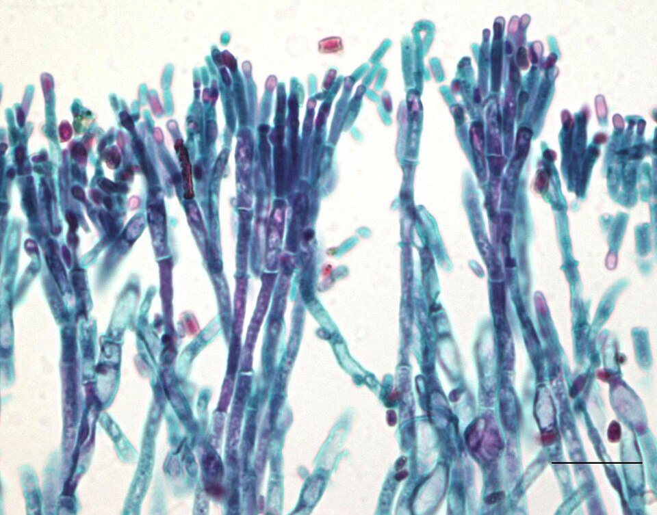
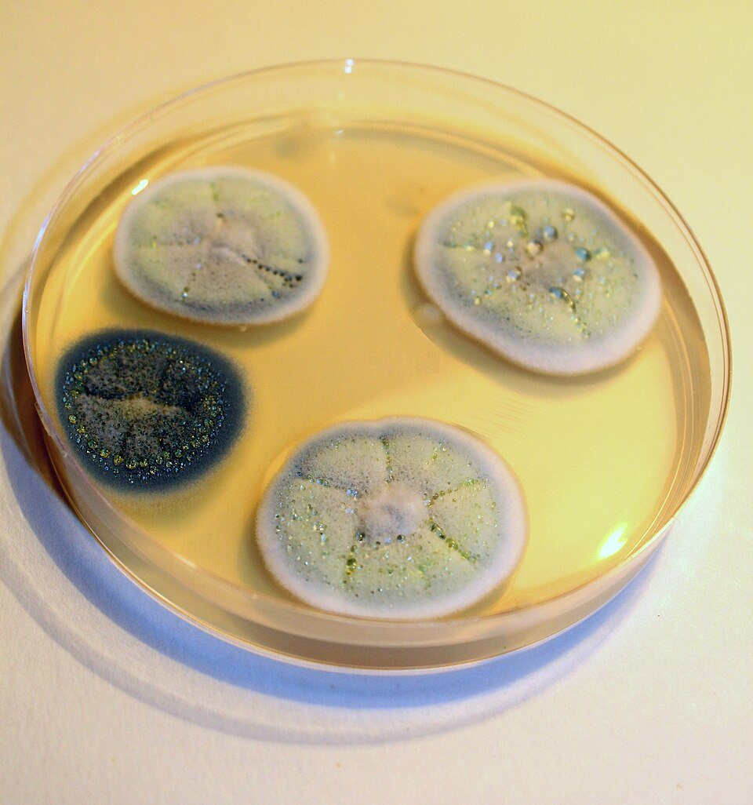
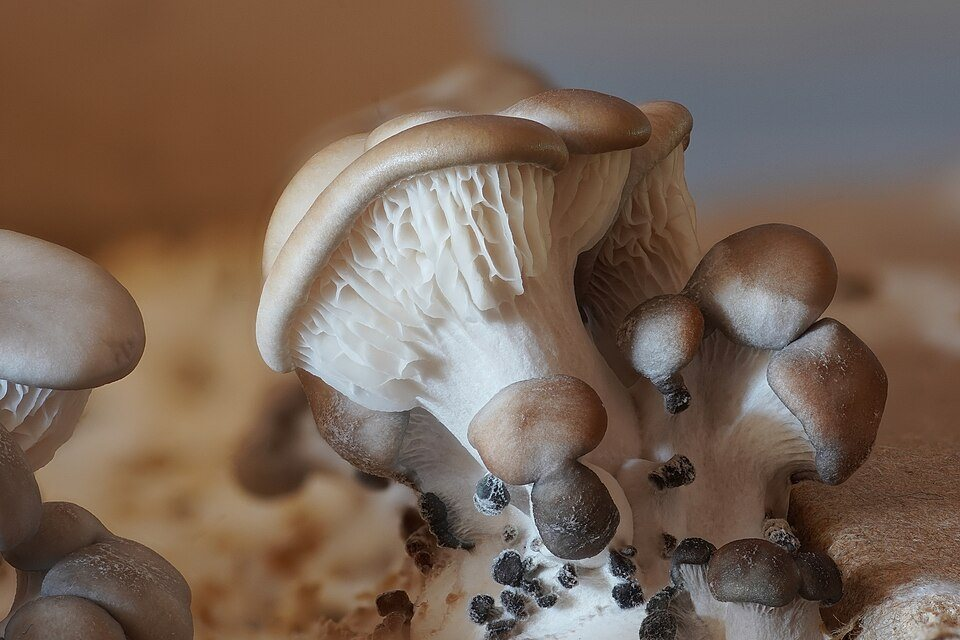

Biologie, mycologie, laboratoire, ingénierie et transmission : huit univers distincts, reliés dans un même écosystème.
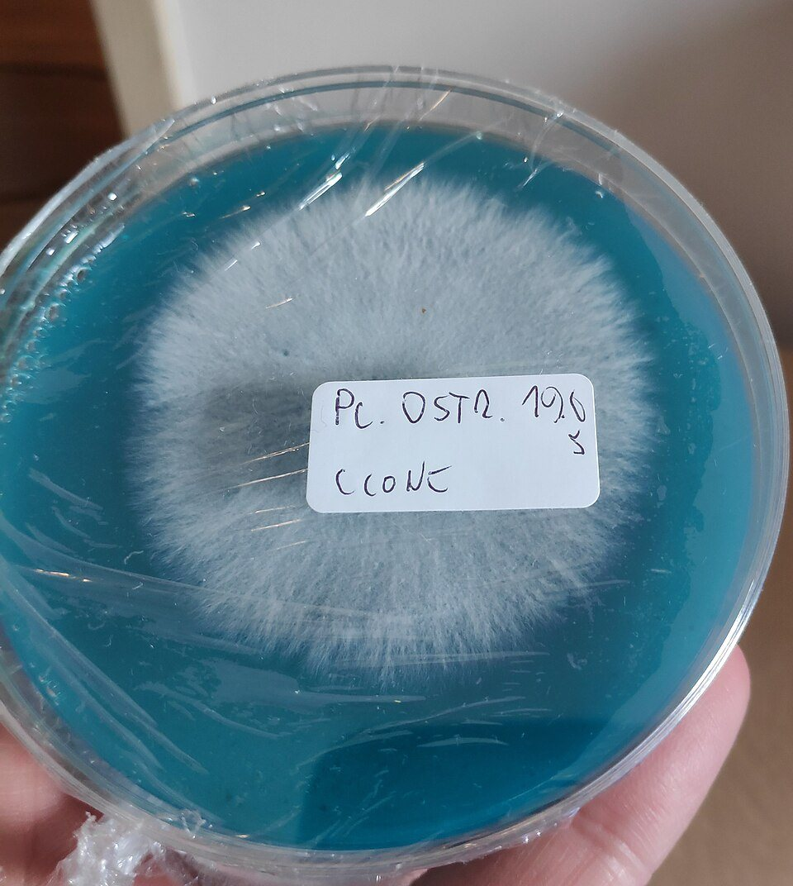
01Mycologie & culturesSouches · mycélium · substratsSouches fongiques, cultures, mycélium et valorisation des substrats.
Ouvrir cet univers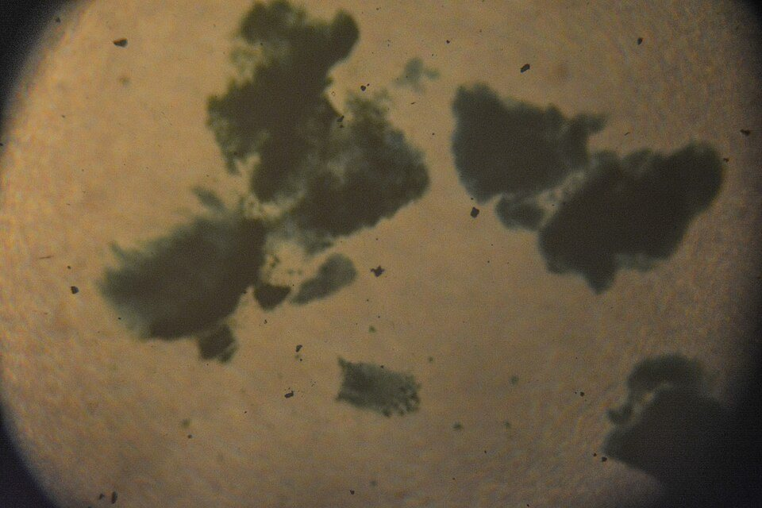
02BiotechnologiesMicroorganismes · bioprocédésMicroorganismes utiles, bioprocédés et solutions biologiques appliquées.
Ouvrir cet univers 03Ingénierie & IoTCapteurs · automatisationInstrumentation, capteurs, automatisation et prototypes techniques.
Ouvrir cet univers 04TechnoSoilSols · eau · matière organiqueUn axe expérimental consacré aux sols, à l’eau et à la matière organique.
Ouvrir cet univers 05Laboratoire R&DProtocoles · mesures · essaisProtocoles, mesures, reproductibilité et qualification des résultats.
Ouvrir cet univers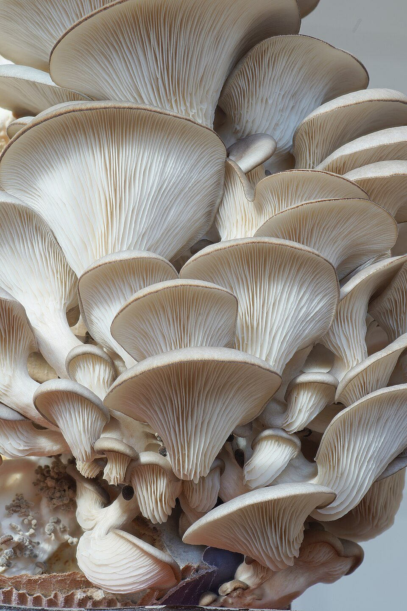
06Produits & ressourcesCatalogue · fiches · kitsCatalogue public, ressources biologiques, supports et kits.
Ouvrir cet univers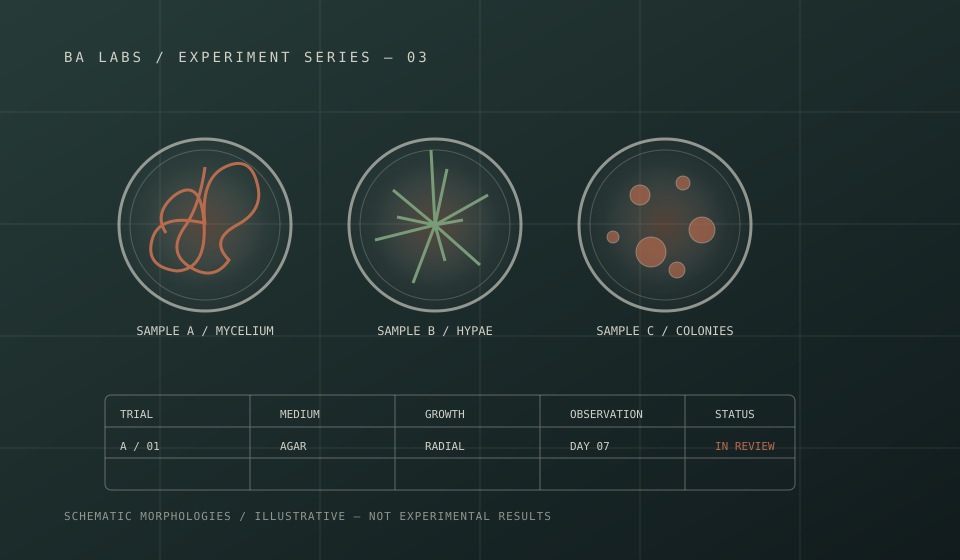
07Projets scientifiquesRecherche · essais · prototypesProjets scientifiques, essais et résultats sélectionnés pour une présentation publique.
Ouvrir cet univers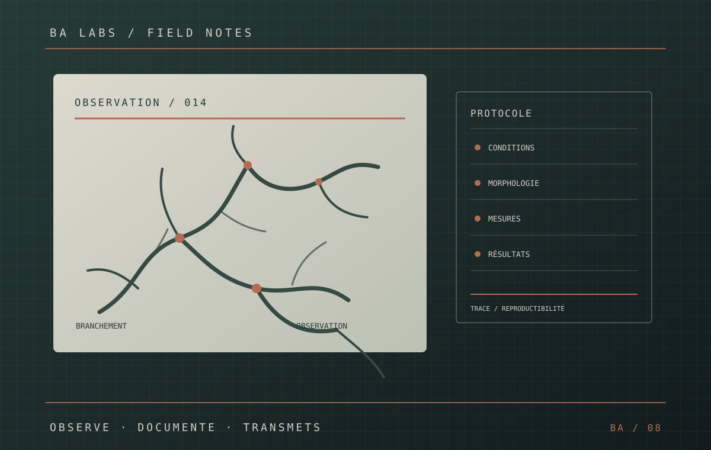
08Ressources & transmissionGuides · documentation · partageGuides publics, fiches, méthodes et ressources de transmission.
Ouvrir cet universUne sélection issue du catalogue public BA Labs. Chaque fiche renvoie à sa référence documentée ; le lot, le volume et le conditionnement sont confirmés avant toute fourniture.
A selection from the BA Labs public catalogue. Each profile links to its documented reference; batch, volume and packaging are confirmed before supply.
مجموعة مختارة من الكتالوج العام لـ BA Labs. كل بطاقة تفتح المرجع الموثّق، ويتم تأكيد الدفعة والحجم والتغليف قبل التوفير.
Uma seleção do catálogo público BA Labs. Cada ficha liga à respetiva referência documentada; lote, volume e embalagem são confirmados antes do fornecimento.
Consulter le catalogue complet dans Notion ↗ Open the full Notion catalogue ↗ افتح الكتالوج الكامل في Notion ↗ Consultar o catálogo completo no Notion ↗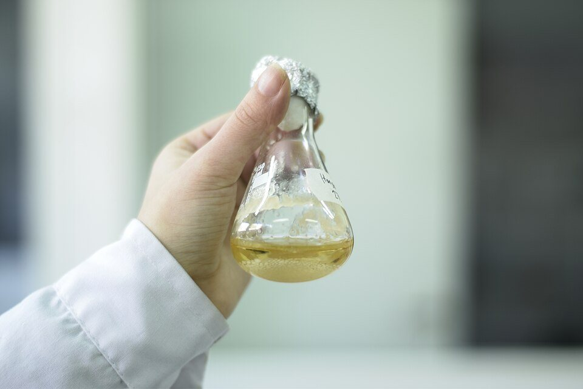
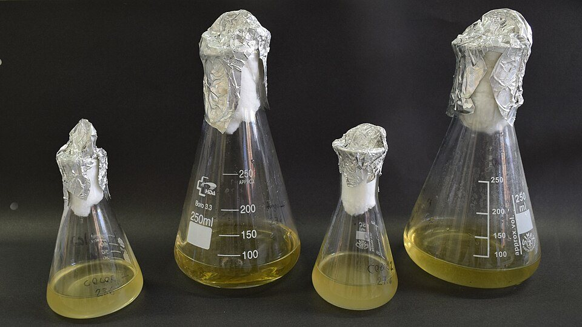
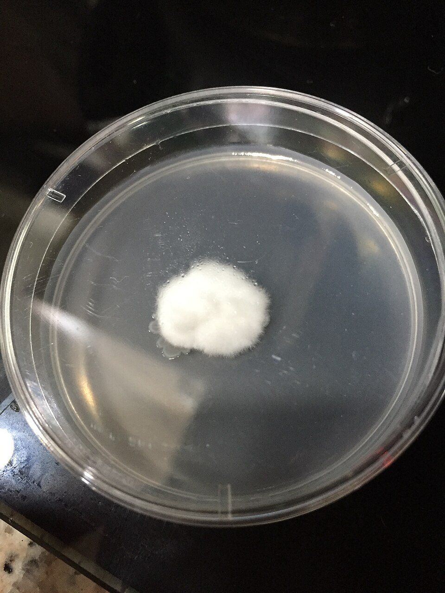
Photographies documentaires des méthodes de culture — elles ne représentent pas les lots exacts proposés.
Documentary photographs of cultivation methods — they do not depict the exact supplied batches.
صور توثيقية لطرق الزراعة — لا تمثل الدفعات المعروضة نفسها.
Fotografias documentais dos métodos de cultivo — não representam os lotes exatos fornecidos.
Culture liquide de Pleurotus pulmonarius — désignation « été ».
Pleurotus pulmonarius liquid culture — “summer” designation.
مزرعة سائلة من Pleurotus pulmonarius — تسمية «الصيف».
Cultura líquida de Pleurotus pulmonarius — designação «verão».
Sur demandeOn requestحسب الطلبSob consulta↗ BAL-LC-PPU-HIV-001PLEUROTUS PULMONARIUSCulture liquide de Pleurotus pulmonarius — désignation « hiver ».
Pleurotus pulmonarius liquid culture — “winter” designation.
مزرعة سائلة من Pleurotus pulmonarius — تسمية «الشتاء».
Cultura líquida de Pleurotus pulmonarius — designação «inverno».
Sur demandeOn requestحسب الطلبSob consulta↗ BAL-LC-PER-HYB-001PLEUROTUS ERYNGIICulture liquide de Pleurotus eryngii — sélection hybride.
Pleurotus eryngii liquid culture — hybrid selection.
مزرعة سائلة من Pleurotus eryngii — مجموعة هجينة.
Cultura líquida de Pleurotus eryngii — seleção híbrida.
Sur demandeOn requestحسب الطلبSob consulta↗ BAL-LC-POS-KRYOS-001PLEUROTUS OSTREATUSCulture liquide de Pleurotus ostreatus — KRYOS.
Pleurotus ostreatus liquid culture — KRYOS.
مزرعة سائلة من Pleurotus ostreatus — KRYOS.
Cultura líquida de Pleurotus ostreatus — KRYOS.
Sur demandeOn requestحسب الطلبSob consulta↗ BAL-LC-POS-GRISAM-001PLEUROTUS OSTREATUSCulture liquide de Pleurotus ostreatus — Gris américain.
Pleurotus ostreatus liquid culture — American Grey.
مزرعة سائلة من Pleurotus ostreatus — Gris américain.
Cultura líquida de Pleurotus ostreatus — Cinzento americano.
Sur demandeOn requestحسب الطلبSob consulta↗ BAL-LC-POS-HK35-001PLEUROTUS OSTREATUSCulture liquide de Pleurotus ostreatus — HK35.
Pleurotus ostreatus liquid culture — HK35.
مزرعة سائلة من Pleurotus ostreatus — HK35.
Cultura líquida de Pleurotus ostreatus — HK35.
Sur demandeOn requestحسب الطلبSob consulta↗ BAL-LC-PPU-001PLEUROTUS PULMONARIUSCulture liquide de Pleurotus pulmonarius.
Pleurotus pulmonarius liquid culture.
مزرعة سائلة من Pleurotus pulmonarius.
Cultura líquida de Pleurotus pulmonarius.
Sur demandeOn requestحسب الطلبSob consulta↗ BAL-LC-PCO-001PLEUROTUS COLUMBINUSCulture liquide de Pleurotus columbinus.
Pleurotus columbinus liquid culture.
مزرعة سائلة من Pleurotus columbinus.
Cultura líquida de Pleurotus columbinus.
Sur demandeOn requestحسب الطلبSob consulta↗ BAL-LC-POS-P80-001PLEUROTUS OSTREATUSCulture liquide de Pleurotus ostreatus — P80.
Pleurotus ostreatus liquid culture — P80.
مزرعة سائلة من Pleurotus ostreatus — P80.
Cultura líquida de Pleurotus ostreatus — P80.
Sur demandeOn requestحسب الطلبSob consulta↗ BAL-LC-POS-G8-001PLEUROTUS OSTREATUSCulture liquide de Pleurotus ostreatus — G8.
Pleurotus ostreatus liquid culture — G8.
مزرعة سائلة من Pleurotus ostreatus — G8.
Cultura líquida de Pleurotus ostreatus — G8.
Sur demandeOn requestحسب الطلبSob consulta↗ BAL-LC-POS-BLUE-001PLEUROTUS OSTREATUSCulture liquide de Pleurotus ostreatus — Blue Oyster.
Pleurotus ostreatus liquid culture — Blue Oyster.
مزرعة سائلة من Pleurotus ostreatus — Blue Oyster.
Cultura líquida de Pleurotus ostreatus — Blue Oyster.
Sur demandeOn requestحسب الطلبSob consulta↗ BAL-CUL-AGAR-001MILIEU DE CULTURE / CULTURE MEDIUMBoîtes de Petri prêtes à l’emploi ; format et conditionnement à confirmer.
Ready-to-use Petri dishes; format and packaging to be confirmed.
أطباق بتري جاهزة للاستعمال؛ يتم تأكيد الحجم والتغليف.
Placas de Petri prontas a utilizar; formato e embalagem a confirmar.
Sur demandeOn requestحسب الطلبSob consulta↗Les références expérimentales et indisponibles restent dans le catalogue documentaire Notion, mais ne sont pas présentées ici comme des produits proposés. Experimental and unavailable references remain in the Notion documentation catalogue, but are not presented here as offered products. تبقى المراجع التجريبية وغير المتاحة في كتالوج التوثيق على Notion، ولا تُعرض هنا كمنتجات معروضة. As referências experimentais e indisponíveis permanecem no catálogo documental do Notion, mas não são apresentadas aqui como produtos disponíveis.
Des cultures fongiques aux substrats, la mycologie ouvre des pistes concrètes pour observer, expérimenter et valoriser la matière organique.
Explorer les domainesBA Labs explore les liens entre biologie, mycologie, matériaux organiques et ingénierie. Une démarche expérimentale où l’observation du vivant guide la conception de méthodes, de cultures et de prototypes.
Découvrir notre écosystème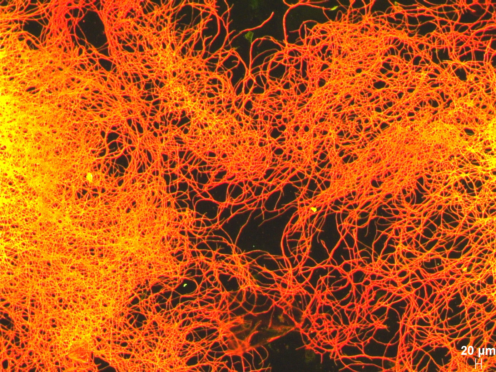
Chaque piste commence par une question. Elle progresse par observation, expérimentation et documentation, avant d'envisager une application.
Les disciplines ne sont pas isolées. Explore leurs connexions, ouvre un domaine et suis les liens vers ses ressources.
Entrer dans l’explorateurNous partons des organismes, des cultures et des matières biologiques pour définir les outils et les procédés utiles.We start with organisms, cultures and biological materials, then define the tools and processes that serve them.ننطلق من الكائنات الحية والمزارع والمواد البيولوجية لتحديد الأدوات والعمليات المناسبة لها.Partimos dos organismos, das culturas e dos materiais biológicos para definir as ferramentas e os processos adequados.
Les essais relient l’observation, la mesure et les conditions réelles d’application, sans confondre prototype et solution validée.Trials connect observation, measurement and real-world conditions, without confusing a prototype with a validated solution.تربط التجارب بين الملاحظة والقياس وظروف التطبيق الفعلية، مع التمييز بين النموذج الأولي والحل المثبت.Os ensaios ligam observação, medição e condições reais de aplicação, distinguindo um protótipo de uma solução validada.
Méthodes, paramètres et limites sont explicités pour distinguer une piste exploratoire d’un résultat établi.Methods, parameters and limitations are made explicit, separating exploratory directions from established results.نوضح المناهج والمعايير والحدود للتمييز بين مسار استكشافي ونتيجة مثبتة.Métodos, parâmetros e limites são explicitados para distinguir uma hipótese exploratória de um resultado estabelecido.